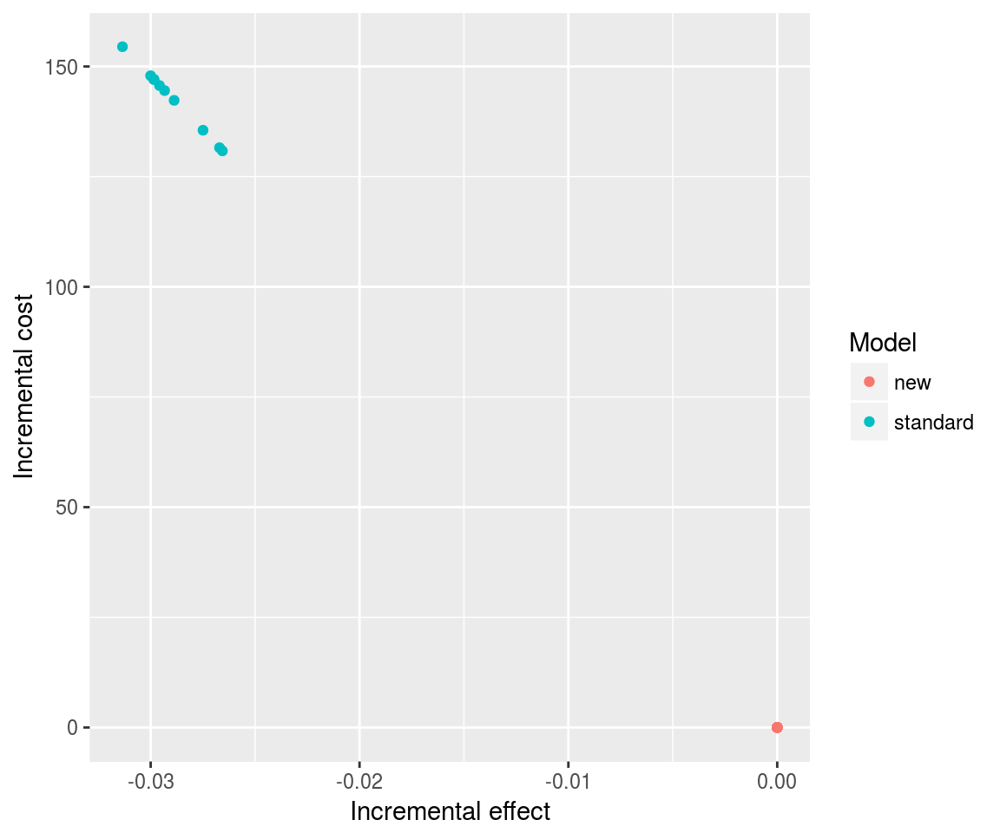
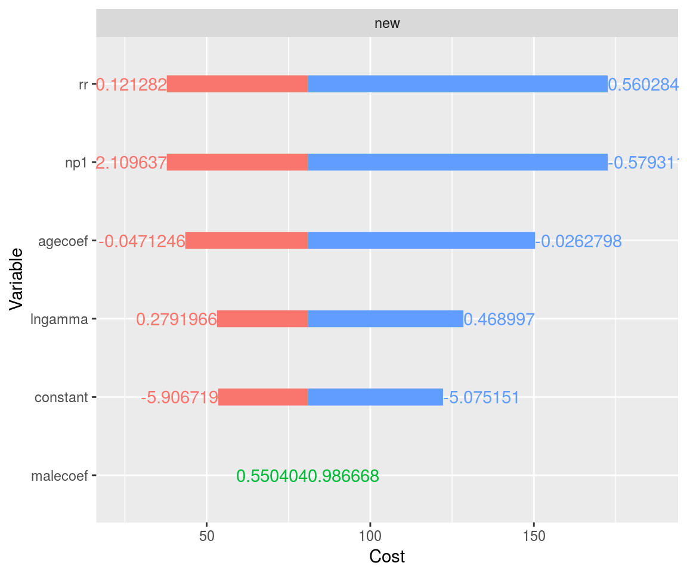

In most of the heemod vignettes models are defined through R code. But models with large numbers of states and transition probabilities might be unwieldy to input at the keyboard, and could be conveniently specified by file inputs.
This vignette demonstrates how to make and use files to input models to heemod. The files can then be used to run a suite of analyses (including deterministic and probabilistic sensitivity analyses, acceptability curve calculation, etc.) and optionally save results to a folder.
The inputs for state definition, transition matrices, model options, etc. (referenced as tabular inputs) must be provided via csv, xls or xlsx files.1 Columns starting by .comment are ignored, as well as blank rows.
These inputs must be provided in separate files. The path to these files is specified in a reference file, that acts as an ‘umbrella’ file atop of the other inputs. The reference file default name is REFERENCE.csv.
Warning for users of the xls format:
The xls files are read with the readxl package. As of version 0.1.1 if a column contains strings and numeric values the numeric values are rounded to 6 decimal places. We therefore recommend to use solely the csv or xlsx format.
This file contains two mandatory columns data and file, as well as optional columns with comments, which will be ignored. The data column must contain the following keywords:
state: file containing model states.tm: file containing transition probabilities.parameters: file containing model parameters.Optionally, the following rows can be provided:
options: file specifying model options.demographics: file describing of the population to run the models on.data: a directory containing additional tables to be loaded; these can be .csv, .xls or .xlsx.output: a directory to save the output graphics.source: a directory in which R source files used in the analysis can be placed, and will be sourced when the model is run. The global environment is not modified.| data | file |
|---|---|
| state | THR_states.csv |
| tm | THR_transition_probs.csv |
| parameters | THR_parameters.csv |
| demographics | THR_demographic_table.csv |
| data | input_dataframes |
| output | output |
| options | THR_options.csv |
All the files and directories must be in the reference file directory. Files or directories located elsewhere must be given by absolute path and marked by a TRUE value in an optional absolute_path column.
A state file contains 2 mandatory columns: .model and .state, corresponding to strategy and state names respectively. The other columns correspond to the state values.
Discounting rates can be specified in .discount.* columns, where * stands for the name of the value to discount. Values are always discounted at the same rate in all states.2
Values specified for only one strategy will be carried over to others. Only values that differ from one strategy to another must be specified separately for each strategy.
| .model | .state | cost | qaly | .discount.qaly |
|---|---|---|---|---|
| standard | PrimaryTHR | 0 | 0.00 | 0.015 |
| standard | SuccessfulPrimary | 0 | 0.85 | |
| standard | RevisionTHR | 5294 | 0.30 | |
| standard | SuccessfulRevision | 0 | 0.75 | |
| standard | Death | 0 | 0.00 | |
| new | PrimaryTHR | 0 | 0.00 | 0.015 |
State values that do not change between models need only be specified once (such as all states except PrimaryTHR in the new model) and will automatically be repeated between models.
A transition probabilities file contains 4 columns:
.model: strategy name.from: initial state.to: end state.prob: transition probability from initial state to end state.| .model | from | to | prob |
|---|---|---|---|
| standard | PrimaryTHR | SuccessfulPrimary | C |
| standard | PrimaryTHR | Death | 0.02 |
| standard | SuccessfulPrimary | SuccessfulPrimary | C |
| standard | SuccessfulPrimary | RevisionTHR | pHRFailStandard |
| standard | SuccessfulPrimary | Death | mr |
| standard | RevisionTHR | SuccessfulRevision | C |
| standard | RevisionTHR | Death | 0.02+mr |
| standard | SuccessfulRevision | SuccessfulRevision | C |
| standard | SuccessfulRevision | RevisionTHR | 0.04 |
| standard | SuccessfulRevision | Death | mr |
| standard | Death | Death | 1 |
| new | SuccessfulPrimary | RevisionTHR | pHRFailNew |
A probability can be defined by any expression: a number, C, a different parameter name (specified in the parameter file), or a function call.
As with the state file above probabilities specified for only one strategy will be carried over to others. Only probabilities that differ from one strategy to another must be specified separately for each strategy. Unspecified transition probabilities are assumed to be 0.
A parameter file contains 2 mandatory columns: the parameter names parameter and the values value.
Optional columns can be added to perform determinist or probabilist sensitivity analysis (DSA and PSA). low and high columns specify the lower and upper bounds of parameter values for DSA, while psa contains the parameter distribution for PSA.
| parameter | value | low | high | psa |
|---|---|---|---|---|
| lngamma | 0.3740968 | 0.2791966 | 0.468997 | normal(0.27, 0.001) |
| gamma | exp(lngamma) | |||
| constant | -5.490935 | -5.906719 | -5.075151 | |
| agecoef | -0.0367022 | -0.0471246 | -0.0262798 | normal(-0.04, 0.001) |
| malecoef | 0.768536 | 0.550404 | 0.986668 | |
| np1 | -1.344474 | -2.109637 | -0.579311 | |
| rr | exp(np1) | 0.121282 | 0.5602843 | binomial(0.12, 500) |
| age_init | 60 | |||
| age | age_init + markov_cycle | |||
| sex | 0 | |||
| sex_str | ifelse(sex==1, “Males”, “Females”) | |||
| mr | look_up(mr_table, age = age, sex = sex_str, bin = TRUE, value = “value”) | |||
| lambdaStandard | exp(constant + agecoef * age_init + malecoef * sex) | |||
| lambdaNew | exp(constant + agecoef * age_init + malecoef * sex) * rr | |||
| pHRFailStandard | 1 - exp(lambdaStandard * ((markov_cycle-1)^gamma - markov_cycle^gamma)) | |||
| pHRFailNew | 1 - exp(lambdaNew * ((markov_cycle-1)^gamma - markov_cycle^gamma)) |
A parameter can be specified as any expression: as a number, through a previously defined parameter, with a mathematical formula or a function call.
The look_up() function can be used to look up parameter values in external reference tables (see section User-defined data), if a data argument is given in the reference file (as for the mr parameter in the above example).
Sometimes external data is required for an analysis (e.g. age-specific mortality rates). A data row in the reference file specifies a subdirectory containing data frames to be loaded (saved as csv, xls, or xlsx files). Multiple files can be placed here, and each filename (without the extension) is used as the dataframe name.3
Models specified by tabular input will run with defaults options. The following options can be specified in a non-mandatory options file:
cost, effect: values to be used as cost and effect.init comma separated starting values.method: counting method.base: name of base model.cycles: run the model for how many cycles?n: number of resample for PSA.num_core: number of cluster cores.| option | value |
|---|---|
| cost | cost |
| effect | qaly |
| method | end |
| cycles | 50 |
| n | 10 |
| init | 1000, 0, 0, 0, 0 |
The entire set of analysis specified in the tabular files can be run by the function run_model_from_tabular().
result <- run_model_tabular(
location = system.file("tabular/thr", package = "heemod")
)## Running DSA on strategy 'standard'...## Running DSA on strategy 'new'...## Resampling strategy 'standard'...## Resampling strategy 'new'...## Updating strategy 'standard'...## Updating strategy 'new'...The results can then be interpreted as usual.
result$model_runs## 2 strategies run for 50 cycles.
##
## Initial state counts:
##
## PrimaryTHR = 1000
## SuccessfulPrimary = 0
## RevisionTHR = 0
## SuccessfulRevision = 0
## Death = 0
##
## Counting method: 'end'.
##
## Values:
##
## cost qaly
## standard 304266.73 14641.51
## new 80960.18 14685.77
##
## Efficiency frontier:
##
## new
##
## Differences:
##
## Cost Diff. Effect Diff. ICER Ref.
## new -223.3065 0.04426563 -5044.693 standardplot(result$psa,
type = "ce")
plot(result$dsa,
result = "cost",
strategy = "new")
result$demographics## An analysis re-run on 8 parameter sets.
##
## * Weigths distribution:
##
## Min. 1st Qu. Median Mean 3rd Qu. Max.
## 0.00219 0.01194 0.01482 0.01489 0.01994 0.02264
##
## Total weight: 0.1191407
##
## * Values distribution:
##
## Min. 1st Qu. Median
## standard - Cost 3.892620e+01 4.392518e+01 993.2017848
## standard - Effect 4.098947e+00 4.403150e+00 13.1467098
## standard - Cost Diff. - - -
## standard - Effect Diff. - - -
## standard - Icer - - -
## new - Cost 1.022389e+01 1.154223e+01 279.3495600
## new - Effect 4.103704e+00 4.408382e+00 13.2912790
## new - Cost Diff. -9.174158e+02 -8.167007e+02 -713.8522248
## new - Effect Diff. 4.587073e-03 5.172165e-03 0.1418194
## new - Icer -6.263848e+03 -6.256979e+03 -5032.9834879
## Mean 3rd Qu. Max.
## standard - Cost 708.5801137 1139.7822107 1284.1587856
## standard - Effect 10.0487221 13.8274561 14.4422790
## standard - Cost Diff. - - -
## standard - Effect Diff. - - -
## standard - Icer - - -
## new - Cost 200.4971884 323.0815351 366.7429773
## new - Effect 10.1504406 13.9929427 14.6290526
## new - Cost Diff. -508.0829253 -32.3829481 -28.7023186
## new - Effect Diff. 0.1017185 0.1643751 0.1867736
## new - Icer -5471.8546606 -4968.9381888 -4911.9130861
##
## * Combined result:
##
## 2 strategies run for 50 cycles.
##
## Initial state counts:
##
## PrimaryTHR = 1000
## SuccessfulPrimary = 0
## RevisionTHR = 0
## SuccessfulRevision = 0
## Death = 0
##
## Counting method: 'end'.
##
## Values:
##
## cost qaly
## standard 708580.1 10048.72
## new 200497.2 10150.44
##
## Efficiency frontier:
##
## new
##
## Differences:
##
## Cost Diff. Effect Diff. ICER Ref.
## new -508.0829 0.1017185 -4994.989 standardFrench csv (with ; separator) are not supported.↩
A single discount rate can be duplicated across states, or specified in one state and left blank elsewhere. Specifying two different discount rates for a single variable in different states will cause an error.↩
Having multiple files with the same base name but different extensions in the directory will cause an error.↩